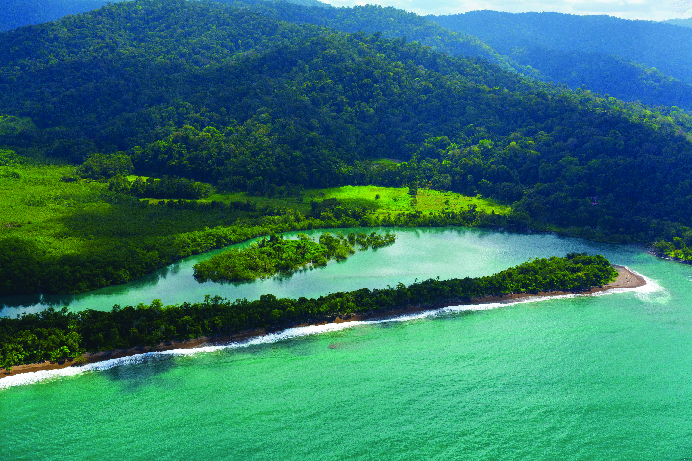
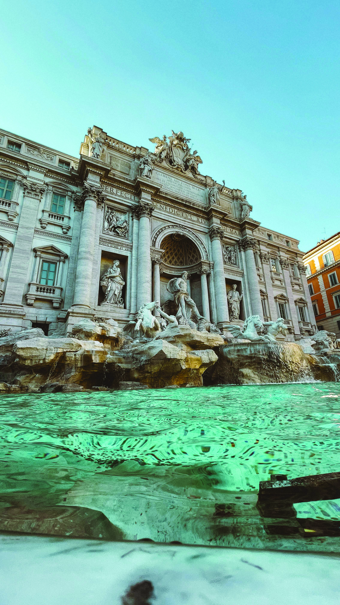

Mejores Destinos
Destinos que están marcando el 2026
Japón
Tradición y modernidad en perfecta armonía

Viajar a Japón es entrar en un mundo donde cada detalle parece cuidadosamente pensado. Desde el orden impecable de sus ciudades hasta la delicadeza de sus tradiciones, este destino ofrece una experiencia única que combina historia, tecnología y cultura en perfecta armonía.
Imperdibles de Japón

Tokio
En Tokio, la modernidad se vive en cada esquina pantallas gigantes y barrios vibrantes como Shibuya o Shinjuku que reflejan el ritmo acelerado del país. Sin embargo, a unos pasos, es posible encontrar templos, creando un contraste fascinante entre lo antiguo y lo contemporáneo.

Kioto
Kioto conserva la esencia más tradicional de Japón. Sus templos, jardines y calles llenas de historia permiten conectar con una cultura que valora el respeto, la estética y la espiritualidad. Es el lugar ideal para descubrir ceremonias del té, geishas y paisajes que parecen sacados de otra época.
Japón no es solo un destino, es una experiencia que transforma la forma de viajar. Es perderse entre luces y templos, entre lo ancestral y lo futurista, y descubrir que, en medio de todos esos contrastes, existe una armonía única que lo hace inolvidable.

Costa Rica
Donde la naturaleza es la protagonista

Costa Rica es uno de los destinos más completos de Latinoamérica. Este pequeño país logra combinar selva, playa, montaña y cultura en un solo viaje, convirtiéndose en el lugar ideal para quienes buscan desconectarse y vivir experiencias auténticas. Aquí, la naturaleza no es solo un atractivo, es la protagonista en cada paisaje, sonido y experiencia.
Imperdibles de Costa Rica

Costa Rica
Con más de 30 parques nacionales y reservas naturales, cada rincón del país esconde una sorpresa: desde el imponente volcán Arenal hasta las playas vírgenes de la Península de Osa, pasando por el místico bosque nublado de Monteverde. Y entre tanta maravilla natural, los costarricenses —o ticos, como ellos mismos se llaman— te reciben con una calidez que solo se entiende cuando la vives. No en vano su expresión favorita, “pura vida”, lo dice todo: aquí el tiempo se vive diferente, y eso, para el viajero moderno, no tiene precio.
Costa Rica es un destino donde la naturaleza se convierte en la protagonista de cada experiencia. Entre volcanes, playas, selvas y una biodiversidad increíble, el país transmite una sensación de tranquilidad y aventura al mismo tiempo. Más que un viaje, es una conexión con paisajes únicos y momentos que permanecen en la memoria incluso después de regresar a casa.

Italia
La dolce vita te está esperando

Italia es un destino donde la historia, el arte y la gastronomía se mezclan en cada rincón. Desde ciudades llenas de arquitectura y monumentos icónicos hasta pequeños pueblos con calles encantadoras, el país transmite una esencia única que combina tradición, cultura y belleza en una experiencia inolvidable.
Imperdibles de Italia

Italia
Viajar a Italia es ir a cada rincón que parece una obra de arte. Desde la majestuosidad de Coliseo en Roma hasta los canales de Venecia, el país combina historia, arquitectura y paisajes de una forma única. Caminar por sus calles es encontrarse con siglos de cultura, mientras se disfruta de una gastronomía reconocida en todo el mundo, donde cada plato cuenta una tradición. Pero Italia no es solo historia, también es emoción y diversidad. En Florencia el arte renacentista cobra vida, mientras que en la costa, lugares como la Costa Amalfitana ofrecen vistas que parecen irreales. Entre ciudades vibrantes, pueblos encantadores y paisajes naturales, viajar a Italia se convierte en una experiencia que mezcla belleza, cultura y momentos.
Italia no es solo un lugar para visitar, sino un destino para sentir y disfrutar en cada detalle. Entre paisajes, sabores y ciudades llenas de historia, cada experiencia se convierte en un recuerdo especial. Es un país donde lo clásico y lo cotidiano crean una atmósfera única que hace que cada viaje termine siendo imposible de olvidar.